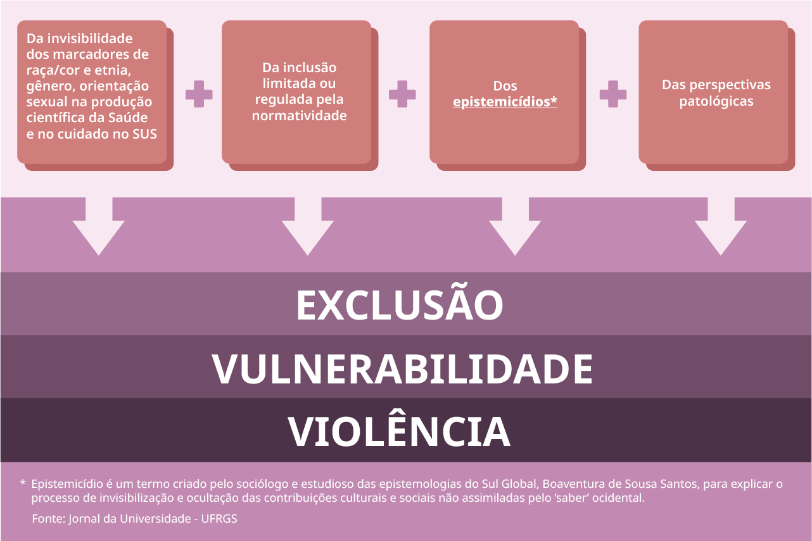

O estigma e a discriminação contra pessoas LGBTQIA+ têm grave impacto na qualidade de vida dessas pessoas e aumentam a sua vulnerabilidade social e em saúde.
Agora que você já viu algumas informações iniciais no tópico anterior, pense: qual é a relação entre LGBTQIA+, o estigma e a discriminação?
Para ajudar nessa reflexão, vamos mencionar as normas e regulações na sociedade e como elas estabelecem condições de marginalizações, violências, violações, estigma e discriminação.
O termo heteronormatividade é utilizado para descrever situações nas quais apenas os relacionamentos entre pessoas de gêneros opostos ou heterossexuais são considerados normais ou corretos. Ao conceber a heterossexualidade como norma, as demais orientações sexuais são marginalizadas e passíveis de estigma e de discriminação.
Do mesmo modo, a normacisgênero desconsidera outros arranjos possíveis, como a pessoa transexual ou travesti, promovendo situações de exclusão, violências e estigmatização.
Além disso, pessoas intersexo passam muitas vezes por procedimentos mutiladores com o intuito de alterar seus corpos, especialmente órgãos sexuais, para conformá-los a normas físicas baseadas no gênero.
É por essas questões citadas acima e outras que nas práticas em saúde precisamos compreender esses conceitos e a sua relação com o cuidado. A literatura tem demonstrado a importância de discutirmos esses conceitos tendo em vista que a população LGBTQIA+, enfrenta:
Piores e graves situações de violência, como: crimes de ódio e assassinatos.
Barreiras e dificuldade de acesso aos serviços de saúde.
Problemas de saúde mental.
Dificuldades de acesso à informação e ao cuidado.
Piores desfechos de agravos de saúde, como maior prevalência ao HIV.
Dificuldade de acesso a terapias, como: a terapia hormonal.
Desconhecimento e desrespeito ao uso do nome social.
Compreensão de suas identidades, em perspectiva patológica e de criminalização.
Violação de direitos e situações de iniquidade.
question_mark
Saiba mais...
Para saber mais sobre estigma, discriminação e violência na área da saúde, faça as leituras indicadas a seguir.
Lembre-se: o estigma e a discriminação contra pessoas LGBTQIA+ gera piores situações de vida, decorrentes:

Conteúdo textual do infográfico: Quadrado 1: a invisibilidade dos marcadores de raça/cor e etnia, gênero, orientação sexual na produção científica da Saúde e no cuidado no SUS. Mais. Quadrado 2: A inclusão limitada ou regulada pela normatividade. Mais. Quadrado 3: Os Epistemicídios. Mais. Quadrado 4: As Perspectivas patológicas. Igual. A exclusão, a vulnerabilidade e a violência contra pessoas LGBTQIA+.
Glossário do termo Epistemicídios: Epistemicídio é um termo criado pelo sociólogo e estudioso das epistemologias do Sul Global, Boaventura de Sousa Santos, para explicar o processo de invisibilização e ocultação das contribuições culturais e sociais não assimiladas pelo 'saber' ocidental. Fonte do glossário: Jornal da Universidade - UFRGS
Este podcast tem o propósito de abordar tópicos relacionados à população de Lésbicas, Gays, Bissexuais, Travestis e Transexuais evidenciando fatos, estudos, perspectivas, opiniões, lutas e conquistas para uma reflexão crítica no sentido de resistir às desigualdades e promover a equidade.
O estigma e a discriminação contra essas populações impactam nos índices de saúde mental e exclusão escolar, afetando fortemente a trajetória social dos jovens e as oportunidades de inserção no mercado de trabalho.
Consiste em utilizar a comunicação como estratégia de promover informação aos indivíduos e grupos, dentro de um processo democrático, dialógico e respeito aos aspectos culturais de cada grupo.
Estratégia: Advocacy
Consiste na tarefa de realizar ações que influenciem autoridades políticas e governamentais para se sensibilizarem com a doença.
Estratégia: Mobilização social
É uma atividade para promover a união dos diversos atores envolvidos – sociedade civil, profissionais de saúde, políticos – em prol da melhoria da prevenção, tratamento e controle da doença.
BENCHIMOL, Jaime L.
Reforma urbana e revolta da vacina na cidade do Rio de Janeiro. In: Jorge
Ferreira; Lucilia de Almeida Neves. (org.). Brasil republicano. Economia e
sociedade, poder e política, cultura e representações. Rio de Janeiro:
Editora Civilização Brasileira, 2003, v.1, pp. 231-286.
BENCHIMOL, Jaime L. e
Teixeira, Luiz A. Cobras, Lagartos e Outros Bichos: uma História Comparada
dos Institutos Oswaldo Cruz e Butantan. 1. ed. Rio de Janeiro: UFRJ/FIOCRUZ,
1993. 238p .
BENCHIMOL, Jaime L.
(org.) Manguinhos do sonho à vida: a ciência na Belle Époque. 2a. ed. Rio de
Janeiro: Editora Fiocruz, 2020. v.1. 320p.
BENCHIMOL, Jaime L.
Dos micróbios aos mosquitos. Febre amarela e a revolução pausteriana no
Brasil. Rio de Janeiro: Editora Fiocruz/Editora da UFRJ, 1999. v.1. 498p.
CASTRO-SANTOS, Luiz
Antônio de. A reforma sanitária pelo alto: o pioneirismo paulista no início
do século XX. Dados, v. 36, n.3, 1993, pp. 361-92.
CHALHOUB, Sidney.
Cidade febril: cortiços e epidemias na Corte imperial. São Paulo: Companhia
das Letras, 1996, pp. 97-185.
TEIXEIRA, Luiz
Antônio; EDLER, F. C. História e Cultura da Medicina no Brasil. 1. ed. São
Paulo: Aori Produções Culturais, 2012. v.1. 2081p.
TEIXEIRA, Luiz
Antônio. Ciência e Saúde na Terra dos Bandeirantes: A Trajetória do
Instituto Pasteur de São Paulo 1903-1915. 1. ed. Rio de Janeiro: Editora da
Fiocruz, 1995. 233p.
TELAROLLI JÚNIOR,
Rodolpho. Poder e saúde: as epidemias e a formação dos serviços de saúde em
São Paulo. São Paulo: Unesp, 1986.
BATALHA, Cláudio H.
M. “Sociedades de trabalhadores no Rio de Janeiro do século XIX: algumas
reflexões em torno da formação da classe operária”, in: Cadernos AEL:
sociedades operárias e mutualismo, Campinas, UNICAM-IFCH, vol. 6, no 10/11,
1999, pp. 43-66.
BOSCHETTI, Ivanete.
Seguridade social e trabalho: paradoxos na construção de políticas de
previdência e assistência social no Brasil. Brasília: Letras Livres; Ed.
UnB, 2006.
BRAGA, Jose Carlos de
Souza & PAULA, Sergio Goes de. Saúde e previdência: estudos de política
social. São Paulo: Cebes/Hucitec, 1981.
CARDOSO, Adalberto
Moreira Cardoso. A Construção da sociedade do trabalho no Brasil, Rio de
janeiro: FGV, 2014.
CORREA, Larissa.
“Corporativismo e regulamentação do trabalho no Brasil: um debate entre
especialistas brasileiros e norte-americanos na década de 1960”, Sociologia
Antropologia, Vol. 6, nº 1 (2016a): 209 -234.
CORREA, Larissa. “O
corporativismo dos trabalhadores: leis e direitos na Justiça do Trabalho
entre os regimes democrático e ditatorial militar no Brasil (1953-1978)”,
vol 42, nº 2 (2016b): 500-526.
Dicionário
Histórico-Biográfico Brasileiro pós-1930. 2. ed. Rio de janeiro: Ed. FGV,
CPDOC, 2000.
FLEURY, Sonia.
Assistência médica previdenciária: evolução e crise de uma política social.
In: FLEURY, Sonia; BAHIA, Lígia e AMARANTE, Paulo (Orgs.). Saúde em debate:
fundamentos da reforma sanitária. Rio de Janeiro: CEBES, 2007.
FORTES, Alexandre.
“Da solidariedade à assistência: estratégias organizativas e mutualidade no
movimento operário de Porto Alegre na primeira metade do século XX”, in:
Cadernos AEL: sociedades operárias e mutualismo, Campinas, UNICAM-IFCH, vol.
6, no 10/11, 1999, pp. 173-218.
GOMES, Angela de
Castro. Ideologia e trabalho no Estado Novo. In: PANDOLFI, Dulce (Org.).
Repensando o Estado Novo. Rio de Janeiro: Ed. FGV, 1999, p. 57.
GOMES, Angela de
Castro. A invenção do trabalhismo. São Paulo; Rio de Janeiro: Vértice;
Iuperj, 1988.
GOMES, Angela de
Castro. “Ideologia e Trabalho no Estado Novo” , in: PANDOLFI, Dulce (org.)
Repensando o Estado Novo, Rio de JANEIRO, Editora da FGV, 1999, p. 57.
__________Aprendizado
e Difusão na Constituição de Políticas: A Previdência social e seus
técnicos, in: Revista Brasileira de Ciências Sociais, vol 3, nº 7
(1988):84-98.
HOCHMAN, Gilberto.
Duas gêneses, duas histórias na previdência social brasileira: o Instituto
dos Industriários e o Instituto dos Bancários. Cadernos de História e Saúde
– Casa de Oswaldo Cruz, v. 2, Fiocruz, 1992.
______ e FONSECA,
Cristina M. O. O que há de novo? Políticas de saúde pública e previdência,
1937-45. In: PANDOLFI, Dulce (Org.). Repensando o Estado Novo. Rio de
Janeiro: Ed. FGV, 1999.
KERSTENETZKY, Célia.
O Estado do Bem-Estar Social na Idade da Razão. Rio de Janeiro: Elselvier,
2012.
LOBO, Valéria
Marques. Corporativismo à Brasileira: entre o autoritarismo e a democracia,
Estudos Ibero- americanos, 527-552, vol 42, nº 2, 2016.
________ Democracia e
Justiça: Tribunais do Trabalho no Estado Novo, Em, O que há de novo sobre o
Estado Novo? Autoritarismo e democracia, orgs. Freire, Américo; Martinho,
Francisco Carlos P; Vannucchi, Marco Aurélio, 111-134 Rio de Janeiro:FGV,
2019.
MALLOY, James.
Política de previdência social no Brasil. Rio de Janeiro: Graal, 1986.
OLIVEIRA, Jaime e
TEIXEIRA, Sônia. (Im)previdêcia social: 60 anos de história da previdência
no Brasil. Petrópolis; Rio de Janeiro: Vozes; Abrasco, 1986.
REIS, José Roberto
Franco. Considerações historiográficas sobre corporativismo, cidadania
regulada e a história da assistência à saúde no Brasil: dádiva ou direito?
(1930-1964), in: LOCUS, Revista de História, Juiz de Fora, vol 26, n.2,
2020.
__________Vargas e a
Previdência: entre a dádiva e o direito, in: PONTE, Carlos, Fidélis;
FALHEIROS, Ialê (orgs). Na Corda bamba de sombrinha: a saúde no fio da
História, Rio de Janeiro, Fiocruz/COC; Fiocruz/EPSJV, 2010.
_________Estado,
trabalhadores e previdência social: a dialética do direito e do protetor
(1937-47). In: SENA JUNIOR, Zacarias F. de. O Estado Novo: as múltiplas
faces de uma experiência autoritária. Salvador: Eduneb, 2008.
______. Cultura de
direitos e Estado: os caminhos (in)certos da cidadania no Brasil. In:
MOROSINI, Márcia Valéria G. C. e REIS, José Roberto F. Sociedade, Estado e
direito à saúde. Rio de Janeiro: EPSJV; Fiocruz, 2007.
SANTOS, Wanderley
Guilherme dos. Cidadania e justiça: a política social na ordem brasileira.
2. ed. Rio de Janeiro: Campus, 1987.
VIANNA, Maria Lúcia
T. Werneck. A americanização perversa da seguridade social do Brasil:
estratégias de bem-estar e políticas públicas. 2. ed. Rio de Janeiro: Revan;
Ucam-Iuperj, 2000.
TEIXEIRA, Sonia
Fleury. “O dilema da reforma sanitária Brasileira”. In: Berlinguer,
Giovanni; Teixeira, Sonia Fleury; Campos, Gastão Wagner de Sousa. Reforma
sanitária: Itália e Brasil. São Paulo: Editora Cebes; Hucitec. p.195-207.
1988
PAIVA, Carlos
Henrique Assunção e TEIXEIRA, Luiz Antonio. “Reforma sanitária e a criação
do Sistema Único de Saúde: notas sobre contextos e autores”. Hist. cienc.
saude-Manguinhos, Mar 2014, vol.21, no.1, p.15-36.
Créditos
Ministério da Saúde
Marcelo Queiroga
Ministro
Gil Casimiro
Coordenador Ministério da Saúde
Fundação Oswaldo Cruz – Fiocruz
Nísia Trindade Lima
Presidente
Cristiani Vieira Machado
Vice-Presidência de Educação, Informação e Comunicação (VPEIC)
Campus Virtual Fiocruz
Ana Cristina da Matta Furniel
Coordenadora geral
Adélia Araújo
Coordenadora de produção
Simone Monteiro
Coordenação acadêmica
Rosane Mendes
Coordenadora Plataforma Educare
Fernanda Sousa
Roberta Saboya
Designers Educacionais
Aline Polycarpo
Danilo Blum
Luciana Nunes
Designers de Interface e Interação
Teo Venerando
Edição Audiovisual
Nestablo Ramos Neto
Ilustrador
Carmélia Brito
Recursos Educacionais - Bibliotecária
Maria Angélica Marcondes Drska
Revisão de Português
Bruno Alexandre de Oliveira
Eduardo Xavier da Silva
Suporte Técnico de Tecnologia da Informação - Desenvolvedor
Adriano Lourenço
Orlando Terra
Suporte Técnico de Tecnologia da Informação - Analista de suporte